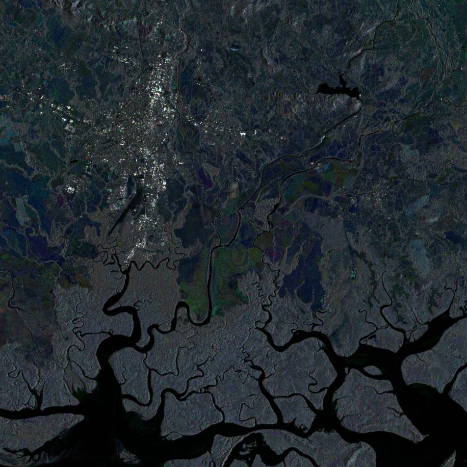

About this blog
This blog is composed of small geospatial analyses, which I have done, primarily tackling questions about environmental phenomena. Most of the examples are written in the JavaScript language for the Google Earth Engine interface. Examples in Python, and the Julia language will also be incorporated over time.

Blogs
Stop Wasting Time on Intermediate Variables, function composition to the rescue!
Exploring a powerful technique from the functional programming paradigm in your python code.
Published at: 18.09.23, 08:55
Total 1 posts.